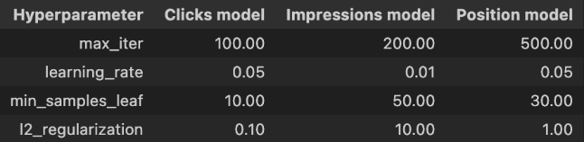
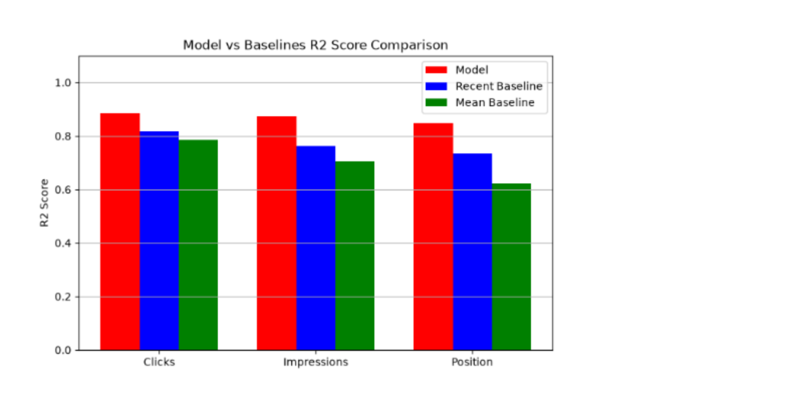
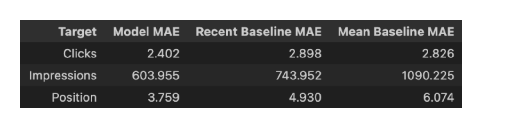
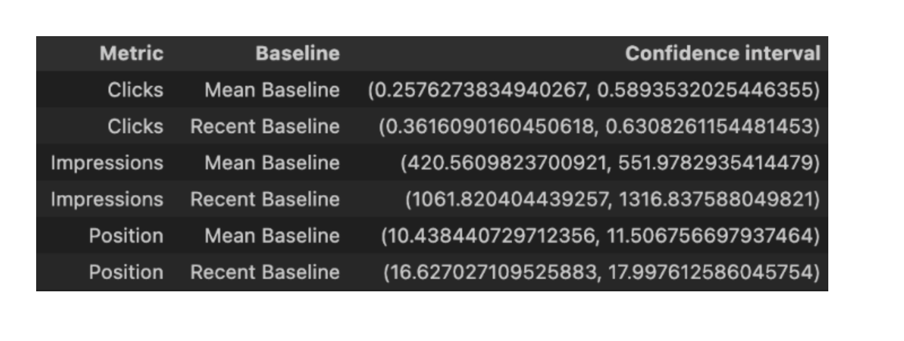
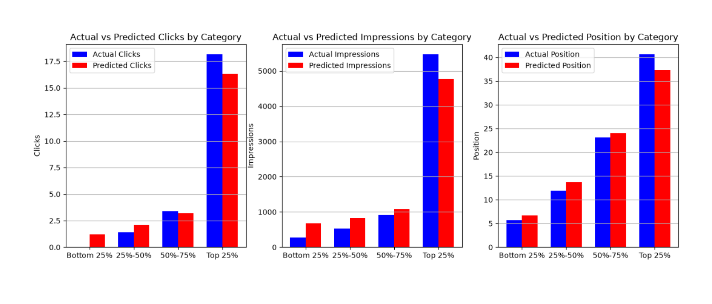
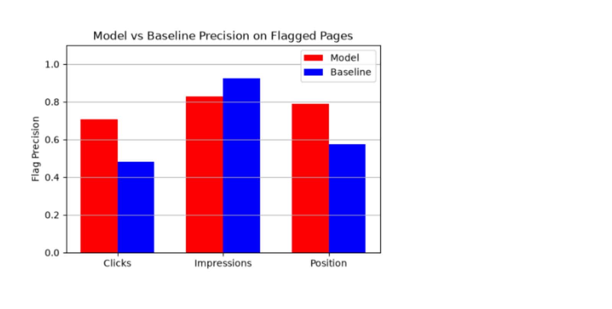

Predicting Future Webpage Performance Using Machine Learning
1. Introduction
1.1 Problem
For a website / company with a large number of webpages, monitoring and analyzing all of the pages manually to see which ones may need updates is very difficult and expensive.
1.2 Research Questions
Can we train machine learning models to predict the future performance of a webpage using past data about that webpage?
How accurately can this model identify which webpage will likely become worse for each of the metrics (clicks, impression, and average search position)?
1.3 Decision Support
For SEO professionals, the model supports the decision of which pages to prioritize updating and what component to update. For example, if clicks are predicted to decrease, they might update the title to be more attractive. If the position is predicted to go deeper, they might update the content to show the most recent information. The model also supports some decisions for non SEO professionals. For example, they could update the inventory of their products based on the predicted clicks of the respective pages. They can also allocate the resources for customer support based on the predicted traffic for the respective pages.
2. Data
2.1 Data Sources
The tables fact_content_daily_performance and dim_content from Flyrank’s internship warehouse dataset were used. The table fact_content_daily_performance includes how many clicks, impressions, and position each page received on each day. The table dim_content includes some general information about each page, of which word_count, update_date, create_date, main_intent were used.
2.2 90-Day Observation Windows
Each row contains a date window of 90 consecutive days where data is available for all 90 days in fact_content_daily_performance. There are a total of 28,051 such rows in the dataset. Date windows that start before the last update date are not included so that an update during the middle of the window will not skew the data. There is a 15 day difference between each row for the same page. For example, if a page consists of 120 days not before the last update date where data is available in fact_content_daily_performance, it contributes to 3 rows: days 1-90, days 16-105, and days 31-120.
2.3 Inclusion and Exclusion Criteria
A column in the dataset can only be included if its value is available at inference time. The columns word_count, update_date, create_date, main_intent are included because these values must remain constant when the page is not updated. Columns like search_volume, competition, and backlinks are not included because they can change even without the page getting updated, and it was not stated which date these data come from.
3. Methodology
3.1 Feature Construction
The dataset has 16 features: clicks_1_15, clicks_16_30, clicks_31_45, clicks_46_60, impressions_1_15, impressions_16_30, impressions_31_45, impressions_46_60, position_1_15, position_16_30, position_31_45, position_46_60, word_count, update_date, create_date, and main_intent.
For the features in the format clicks_x_y or impressions_x_y, it represents the total number of clicks or impressions from day x to day y of that window. For the features in the format position_x_y, it represents the average position (sum of positions / impressions) from day x to day y. For create_date and update_date, it represents the difference (in days) between the first day of the window and the date in which the page was created or last updated. The categorical variable main_intent is represented as an integer when training or testing the model: informational = 0, commercial = 1, transactional = 2, and navigational = 3.
The same 16 features will be used for all 3 models.
3.2 Target Variables
Target for model 1: clicks_61_90 - the total number of clicks in the last 30 days of the window.
Target for model 2: impressions_61_90 - the total number of impressions in the last 30 days of the window.
Target for model 3: position_61_90 - the average position in the last 30 days of the window.
3.3 Validation Design
The data is split into ~80% train, ~10% val, and ~10% test. This is a page disjoint split such that multiple rows from the same page must belong in the same split. The purpose of the val split is to tune hyperparameters and choose the set of hyperparameters that gives the highest r2 score. The model with hyperparameters that gave the best result on the val set is finally evaluated on the test set; no decision was made based on the test set result.
3.4 Machine Learning Model
The 3 models, one for each clicks, impressions, and position, were gradient boost models using HistGradientBoostingRegressor. Gradient boosting is a machine learning method that builds a sequence of decision trees, with each successive tree trained to reduce the errors of the previous trees. HistGradientBoostingRegressor was chosen because the task involves predicting continuous future values from multiple historical and page-level features. The model can capture nonlinear and complex relationships between these features, which may be difficult to represent with simpler models.
The hyperparameter max_depth is fixed at 5 while max_iter, learning_rate, min_sample_leaf, and l2_regularization are optimized using the val set. Hyperparameters are optimized separately for each model.
The following table shows the chosen hyperparameters for each model:

3.5 Baselines
Mean baseline predicts that the future performance will be the average of the past 60 days performance. This average will be doubled for clicks and impressions to account for the difference between the target duration (30 days) and the duration of each feature (15 days) and weighted by impressions for position.
Recent baseline predicts the future performance will be the performance on the most recent 15 days (days 46-60). This will be doubled for clicks and impressions.
3.6 Leakage Checks
Features were checked to ensure that they could be constructed using only information available before the prediction period. Features that could potentially contain information from the future prediction period were excluded. To ensure the test results are reliable and free of data leakage, page disjoint split is used. This prevents, for example, page A days 1-90 in the train set and page A days 16-105 in the test set.
3.7 Flags
Flags could be used to inform the SEO professionals which pages may need review. The flags used here are: clicks_decline, impressions_decline, and position_worsen. The flags clicks_decline and impressions_decline are true when the model predicts the clicks or impressions in the next 30 days to be at least 15% lower than the last 30 days. The flag position_worsen is true when the model predicts the average position in the next 30 days to be at least 15% higher than the last 30 days:
The respective flags are considered correct if clicks or impressions decreases at least 10% or if position increases at least 10%:
The flags could be customized based on the needs of the company. For example, a company can add a flag called clicks_severe_decline if the model predicts clicks to decline by a larger percentage. The baseline flags clicks_decline or impressions_decline if clicks or impressions in days 31-60 is at least 15% lower than days 1-30 and position_worsen if position in days 31-60 is at least 15% higher than days 1-30.
4. Results
4.1 Model vs. Baseline on R2
R2 score is the proportion of variance in the dependent variable that is explained by the independent variable, so unexplained variance = 1 - R2. For clicks, the model decreased the unexplained variance by 38.16% = ((1-0.8163) - (1-0.8864)) / (1-0.8163) relative to the best baseline. For impressions, the model decreased the unexplained variance by 46.51% = ((1-0.7633) - (1-0.8734)) / (1-0.7633) relative to the best baseline. For position, the model decreased the unexplained variance by 43.07% = ((1-0.7337) - (1-0.8484)) / (1-0.7337) relative to the best baseline. This shows that all 3 models substantially outperform the baseline on R2.

4.2 Model vs. Baseline on MAE
Mean absolute error (MAE) is the average distance between the model’s prediction and the actual value. For clicks, the model decreased the MAE by 15.00% = (2.826 - 2.402) / 2.826 relative to the best baseline. For impressions, the model decreased the MAE by 18.81% = (723.456 - 603.955) / 723.456 relative to the best baseline. For position, the model decreased the MAE by 23.75% = (4.930 - 3.759) / (4.930) relative to the best baseline.

This table shows the 95% confidence interval for the difference in MAE between each baseline and the model for each metric. It is calculated using the formula:
where D̄ is the mean difference (baseline - model) in absolute errors, sD is the standard deviation of the differences, n is the sample size, and t* is the critical value for a 95% confidence interval. Since the test set has 2805 rows, n = 2805, df = 2804, and t* = 1.96081. Since all the confidence intervals are entirely positive, the model’s advantage over the baselines is statistically significant for all 3 models.

4.3 Actual vs Prediction
Bottom 25%, 25%-50%, 50%-75%, and Top 25% mean the actual value is at most the value of the first quartile (25th percentile), more than first quartile but at most the median (50th percentile), more than the median but at most the third quartile (75th percentile), and more than the third quartile respectively. The percentile values are calculated relative to the test set. All three tables show that the models tend to overestimate smaller values and underestimate larger values.

4.4 Flag Precision
Refer to section 3.7 for the definition of flag precision. The model outperformed the baseline on clicks with a difference of 0.2227 = 0.7054 - 0.4827 and position with a difference of 0.2135 = 0.7882 - 0.5747. However, the baseline outperforms the model on impressions with a difference of 0.0972 = 0.9252 - 0.8280. Model total flags: clicks 465, impressions: 1029, position: 1610. Baseline total flags: clicks 1643, impressions: 1630, position: 1540.

5. Limitations and Honest Framing
The models don’t state the reasons for its prediction, and it does not establish causal relationships for its predicted values for clicks, impressions, or position. Because it tends to overestimate smaller values and underestimate larger values for each metric, it may be less accurate for extreme values. The model is both trained and tested on Flyrank's dataset, so it may not generalize to all pages. Since the model is not given exact dates as features, it does not know if there is a seasonal event in the recent past or near future that could cause the metrics to be very high. For flagging pages that will decline in impressions, the model performs worse than a simple baseline.
6. Ranked Recommendations
The pages are ranked based on the total number of flags (clicks_decline, impressions_decline, or position_worsen) the model has assigned to it. No flags = low priority, 1 flag = medium priority, 2 flags = high priority, and 3 flags = very high priority, so the recommendation is to allocate resources (like SEO professionals) to reviewing pages with 3 flags and 2 flags first and then 1 flag if they have time or additional resources. The companies can also customize the ranking. For example, if they have chosen flags like severe_clicks_decline, they could give double weight to such flags.
7. Reproducibility
Install the packages in requirements.txt. Run each cell in reproduce.ipynb in order from top to bottom. Random seed is set to 42.
8. Acknowledgments and Data Credit
This project was completed as part of the FlyRank AI internship. The dataset used in this study was provided through the FlyRank internship warehouse and includes data from the fact_content_daily_performance and dim_content tables. The dataset is available in https://huggingface.co/datasets/FlyRank/internship-warehouse